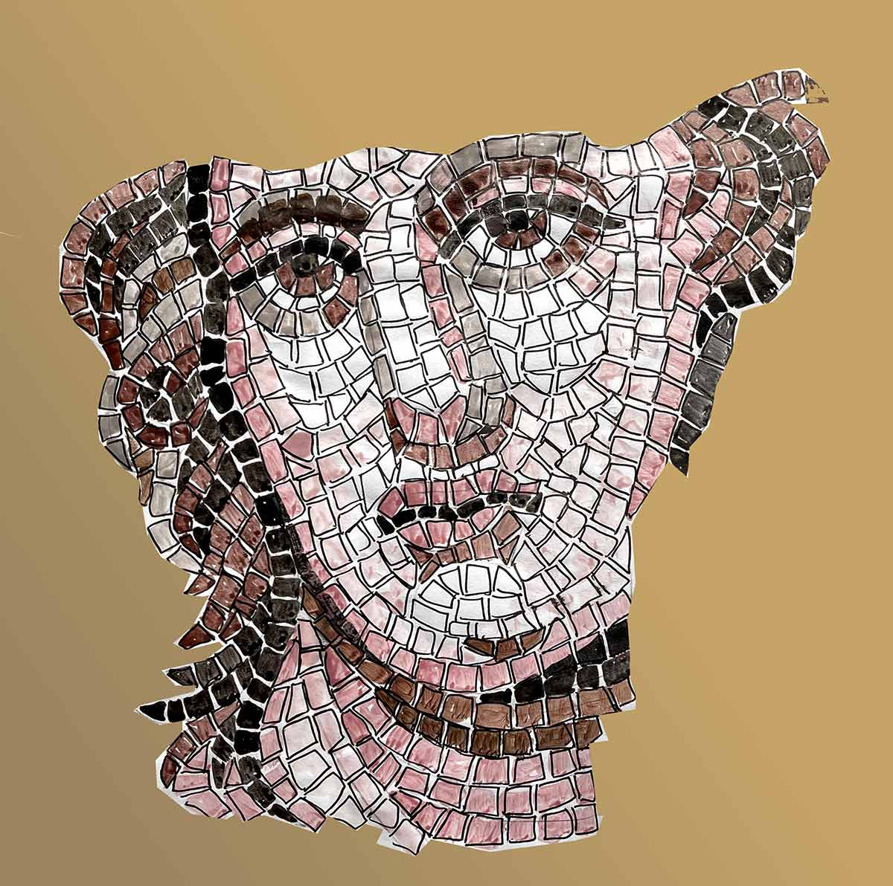

Frammento di mosaico con tralci di vite
Ambito: Ravennate, metà VI secolo
porzione di decorazione parietale con girali di vite su fondo dorato...
- Tipologia:
- mosaico
- Luogo:
- Ravenna
- Materia:
- ambito ravennate

Ambito: Ravennate, metà VI secolo
porzione di decorazione parietale con girali di vite su fondo dorato...